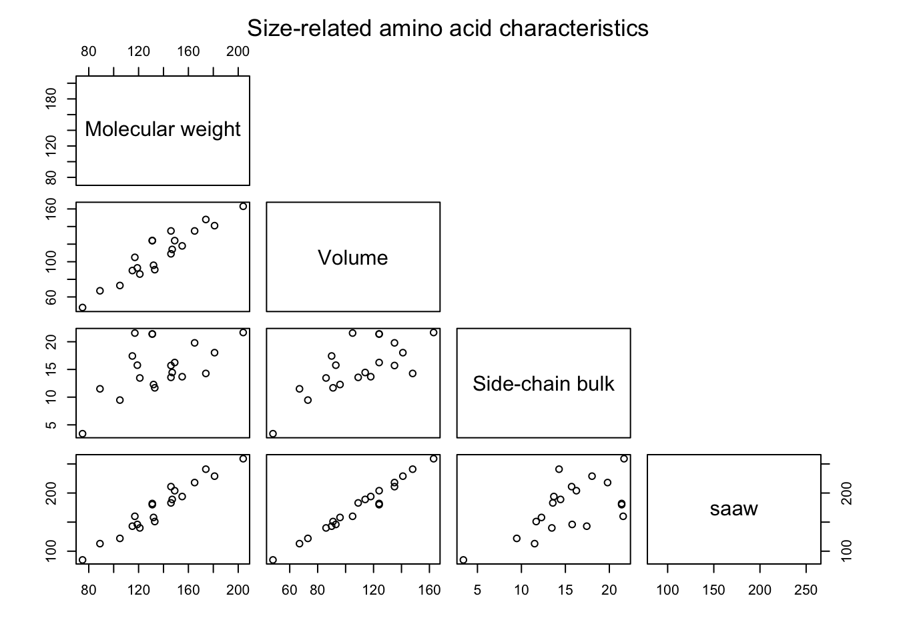
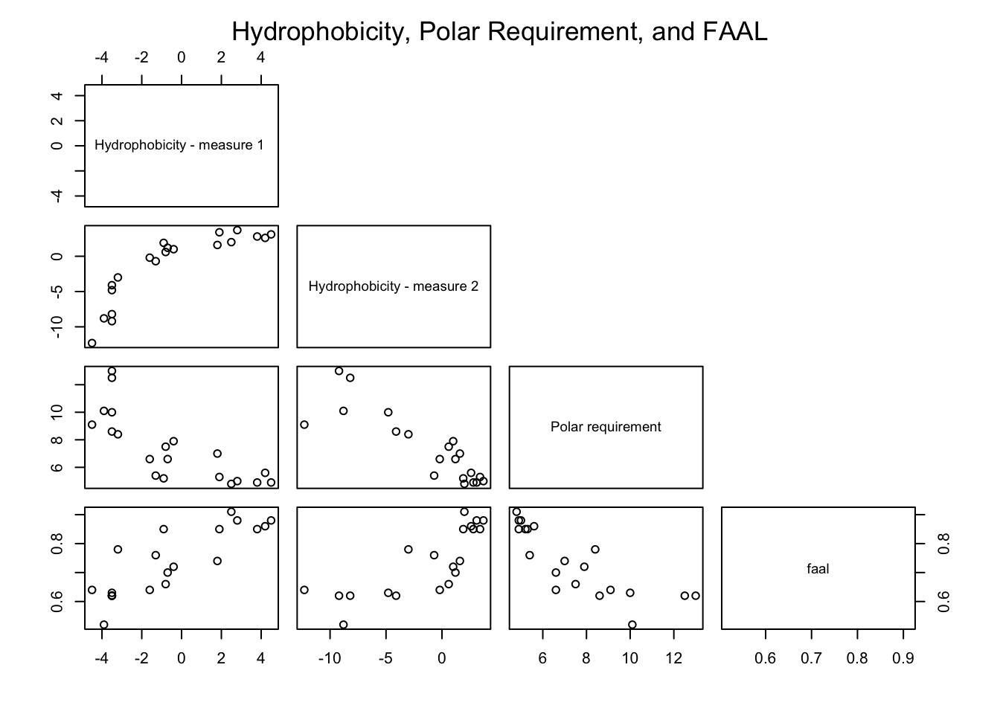
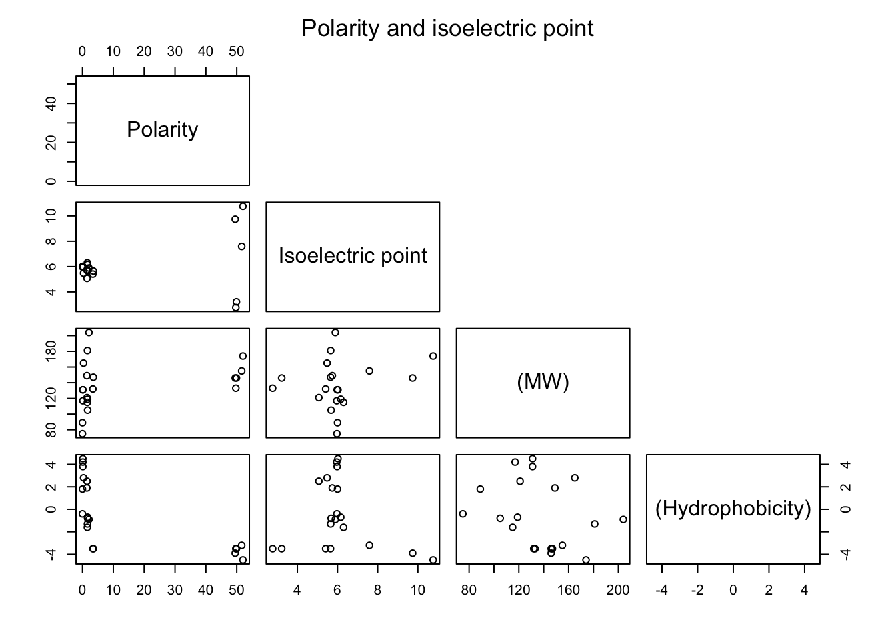
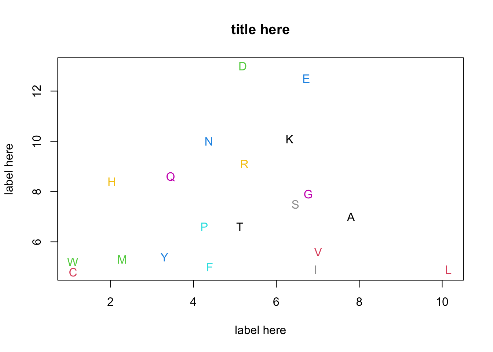

One of the biggest challenges when learning and teaching R is finding good datasets to work with. There are a number of classic datasets in statistics and datascience that have useful features, and they tend to get used again and again. And again and again and again…
One of the most famous datasets in all of data-dom is the iris Wikipedia dataset. It comes prepackage in base R, is a popular example dataset for many blogs, and according to the UCI Machine Learning Repository has been used in papers >80 times.
Variables in the data are
## [1] "Sepal.Length" "Sepal.Width" "Petal.Length" "Petal.Width" "Species"While explaining the difference between sepals (usually green and close to the stem below the flower, but not always) and petals (usually the pretty part of the flower, but not always) is a great chance for science outreach, I’d like to start seeing more datasets out there.
One of my favorite datasets for my biology and data-oriented classes are the chem.cat characteristics of the 20 amino acids that make up most proteins in, well, everything biological on the planet. All proteins, whether cow, insect, or soy are long strings of amino acids. There are 20 “cannonical” amino acids that make up probably >99% of all amino acids in all proteins (but there are two some fun exceptions, selenocysteine and pyrrolysine that get used by bending the normal rules of the genetic code).
This dataset originates from Higgs and Attwood (2005), and was expanded in (Higgs (2009))[https://link.springer.com/article/10.1186/1745-6150-4-16]. I’ve added some additional categorical variables based on typical classifcations used in textbooks.
Higgs and Attwood (2005) use these data to demonstrate several techinques:
The dataset and a related one are used by Higgs in several publications exploring the evolution of the structure of genetic code, e.g. Higgs (2009), Higgs and Pudritz (2009).
I use the dataset for these purposes, as well as scatterplots, scatterplot matrices, correlations, correlation matrices, and3D plots.
This exert shows the basic structure of the data:
## aa MW vol rbulk pol IEP phob1 phob2 saaw faal polreq freq
## 1 A 89 67 11.50 0.00 6.00 1.8 1.6 113 0.74 7.0 7.80
## 2 C 121 86 13.46 1.48 5.07 2.5 2.0 140 0.91 4.8 1.10
## 3 D 133 91 11.68 49.70 2.77 -3.5 -9.2 151 0.62 13.0 5.19
## 4 E 146 109 13.57 49.90 3.22 -3.5 -8.2 183 0.62 12.5 6.72
## 5 F 165 135 19.80 0.35 5.48 2.8 3.7 218 0.88 5.0 4.39There is one row for each of the 20 amino acids, and each column is either a numeric or categorical variable describing its chemistry. The categorical variables are all based on the numeric ones.
Each of the 20 amino acid has a 1-letter code
aminoacids[,1]## [1] "A" "C" "D" "E" "F" "G" "H" "I" "K" "L" "M" "N" "P" "Q" "R" "S" "T" "V" "W"
## [20] "Y"Several famous amino acids are tryptophan, and leucine, isoleucine, and valine, the “branched-chain amino acids” used in nutritional supplements.
Several of the variables describes the size of the molecule and are highly correlated
cols <- c("MW","vol","rbulk","saaw")
labs <- c("Molecular weight","Volume","Side-chain bulk","saaw")
pairs(aminoacids[,cols],
labels = labs,upper.panel = NULL)
mtext(text = "Size-related amino acid characteristics", side = 3, line = 2.5, cex = 1.1)
A major chemical characteristics of molecules is how they behave in water - their hydrophobicity. Hydrophobicity is measured two ways in these data, and is correlated somewhat with a third variable polar requirement
An amino acids polar equirement is “a characteristic property … defined by the paper chromatographic experiments of Woese and coworkers (Woese 1973; Woese et al. 1966a, b) in aqueous solutions of nucleobases.” (Mathew and Luthey-Schulten 2008).
cols <- c("phob1","phob2","polreq","faal")
labs <- c("Hydrophobicity - measure 1 ",
"Hydrophobicity - measure 2",
"Polar requirement","faal")
pairs(aminoacids[,cols],
labels = labs,upper.panel = NULL)
mtext(text = "Hydrophobicity, Polar Requirement, and FAAL", side = 3, line = 2.5, cex = 1.1)
The remaining two variables, polarity (pol) and isoelectric point (IEP) are poorly correlaed with the others. At a molecule’s [isoelectric point](https://en.wikipedia.org/wiki/Isoelectric_point#:~:text=The%20isoelectric%20point%20(pI%2C%20pH,However%2C%20pI%20is%20also%20used.), the pH is such that the molecules carries no net electrical charge.
In the plot below two other varibles are included for comparison.
cols <- c("pol","IEP","MW","phob1")
labs <- c("Polarity","Isoelectric point","(MW)","(Hydrophobicity)")
pairs(aminoacids[,cols],
labels = labs,upper.panel = NULL)
mtext(text = "Polarity and isoelectric point", side = 3, line = 2.5, cex = 1.1)
#Build the dataframes.
### Build dataframe
aminoacids <- data.frame(aa,
MW,vol,
rbulk, pol,
IEP,phob1, phob2,
saaw, faal, polreq,
freq, charge.cat, phob.cat,
vol.cat, pol.cat, chem.cat)#par(mfrow = c(1,1))
plot(polreq ~ freq, data = aminoacids,
xlab = "label here",
ylab = "label here",
main = "title here",
col = 0)
text(polreq ~ freq,
labels = aa,
data = aminoacids,
col = 1:20)